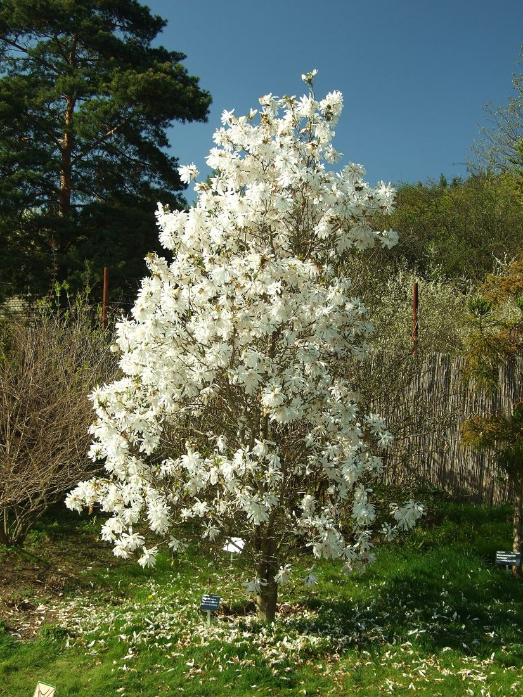
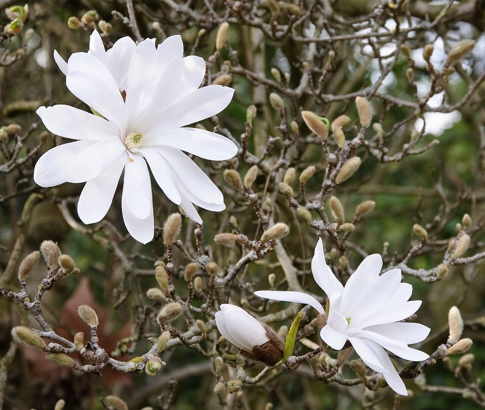

1
Star Magnolia
Magnolia stellata


For about two weeks in early spring, the bare branches are covered in white, star-shaped flowers, before any other tree has leafed out. It's the showiest tree on this list, and it stays compact enough for a front yard.
Watch for: a late frost can brown the open flowers. Planting it on the north or east side of the house delays bloom a little and protects it. Plant in spring, not fall.
- Scent
- ●●● Sweet, light
- Height
- 15–20 ft, 10–15 ft wide
- Light
- Full sun to part shade
- Blooms
- Late March – April